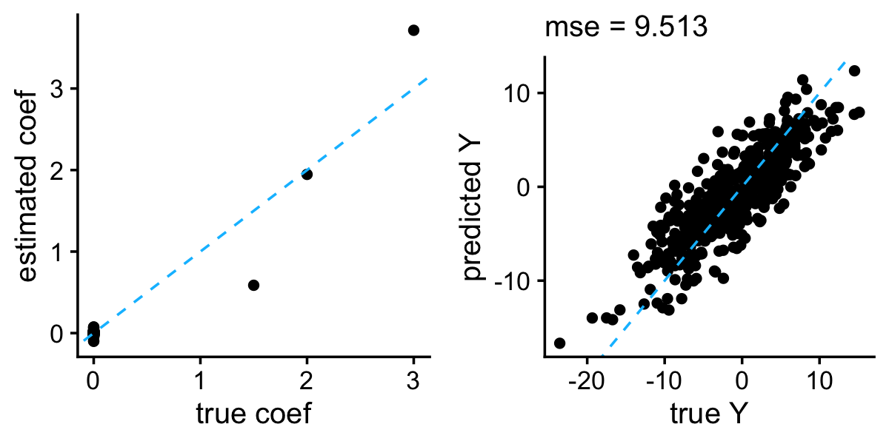
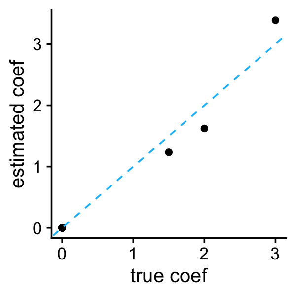
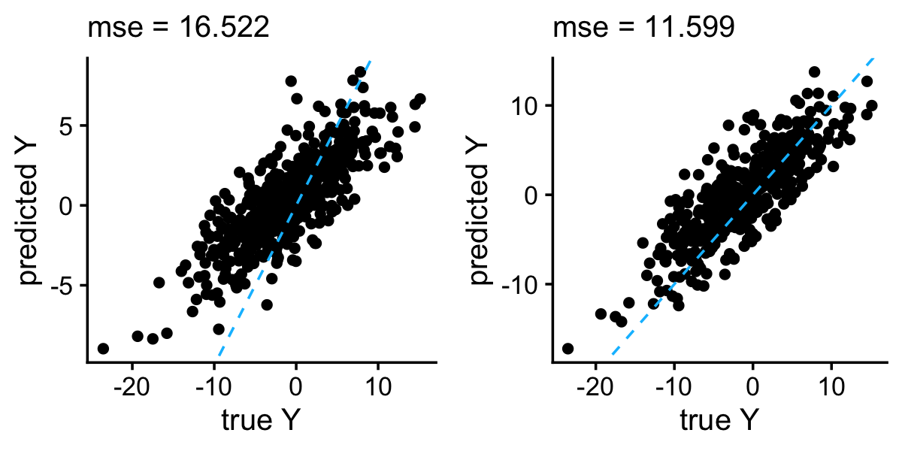

Exploring methods for large-scale multiple linear regression
Peter Carbonetto
Last updated: 2023-06-02
Checks: 6 1
Knit directory: pcarbo/analysis/
This reproducible R Markdown analysis was created with workflowr (version 1.7.0.5). The Checks tab describes the reproducibility checks that were applied when the results were created. The Past versions tab lists the development history.
Great! Since the R Markdown file has been committed to the Git repository, you know the exact version of the code that produced these results.
Great job! The global environment was empty. Objects defined in the global environment can affect the analysis in your R Markdown file in unknown ways. For reproduciblity it’s best to always run the code in an empty environment.
The command set.seed(1) was run prior to running the
code in the R Markdown file. Setting a seed ensures that any results
that rely on randomness, e.g. subsampling or permutations, are
reproducible.
Great job! Recording the operating system, R version, and package versions is critical for reproducibility.
- dirichlet-laplace
- dirichlet-laplace-1
- horseshoe
- horseshoe-1
- horseshoe-3
To ensure reproducibility of the results, delete the cache directory
linreg_methods_demo_cache and re-run the analysis. To have
workflowr automatically delete the cache directory prior to building the
file, set delete_cache = TRUE when running
wflow_build() or wflow_publish().
Great job! Using relative paths to the files within your workflowr project makes it easier to run your code on other machines.
Great! You are using Git for version control. Tracking code development and connecting the code version to the results is critical for reproducibility.
The results in this page were generated with repository version f9c677a. See the Past versions tab to see a history of the changes made to the R Markdown and HTML files.
Note that you need to be careful to ensure that all relevant files for
the analysis have been committed to Git prior to generating the results
(you can use wflow_publish or
wflow_git_commit). workflowr only checks the R Markdown
file, but you know if there are other scripts or data files that it
depends on. Below is the status of the Git repository when the results
were generated:
Ignored files:
Ignored: analysis/fit-scd-ex-k=10.rds
Ignored: analysis/train.mat
Ignored: sbatch/makefile_demo/sims/sim0001.csv
Ignored: sbatch/makefile_demo/sims/sim0002.csv
Ignored: sbatch/makefile_demo/sims/sim0003.csv
Ignored: sbatch/makefile_demo/sims/sim0004.csv
Ignored: sbatch/makefile_demo/sims/sim0005.csv
Ignored: sbatch/makefile_demo/sims/sim0006.csv
Ignored: sbatch/makefile_demo/sims/sim0007.csv
Ignored: sbatch/makefile_demo/sims/sim0008.csv
Ignored: sbatch/makefile_demo/sims/sim0009.csv
Ignored: sbatch/makefile_demo/sims/sim0010.csv
Ignored: sbatch/makefile_demo/sims/sim0011.csv
Ignored: sbatch/makefile_demo/sims/sim0012.csv
Ignored: sbatch/makefile_demo/sims/sim0013.csv
Ignored: sbatch/makefile_demo/sims/sim0014.csv
Ignored: sbatch/makefile_demo/sims/sim0015.csv
Ignored: sbatch/makefile_demo/sims/sim0016.csv
Ignored: sbatch/makefile_demo/sims/sim0017.csv
Ignored: sbatch/makefile_demo/sims/sim0018.csv
Ignored: sbatch/makefile_demo/sims/sim0019.csv
Ignored: sbatch/makefile_demo/sims/sim0020.csv
Ignored: sbatch/makefile_demo/sims/sim0021.csv
Ignored: sbatch/makefile_demo/sims/sim0022.csv
Ignored: sbatch/makefile_demo/sims/sim0023.csv
Ignored: sbatch/makefile_demo/sims/sim0024.csv
Ignored: sbatch/makefile_demo/sims/sim0025.csv
Ignored: sbatch/makefile_demo/sims/sim0026.csv
Ignored: sbatch/makefile_demo/sims/sim0027.csv
Ignored: sbatch/makefile_demo/sims/sim0028.csv
Ignored: sbatch/makefile_demo/sims/sim0029.csv
Ignored: sbatch/makefile_demo/sims/sim0030.csv
Ignored: sbatch/makefile_demo/sims/sim0031.csv
Ignored: sbatch/makefile_demo/sims/sim0032.csv
Ignored: sbatch/makefile_demo/sims/sim0033.csv
Ignored: sbatch/makefile_demo/sims/sim0034.csv
Ignored: sbatch/makefile_demo/sims/sim0035.csv
Ignored: sbatch/makefile_demo/sims/sim0036.csv
Ignored: sbatch/makefile_demo/sims/sim0037.csv
Ignored: sbatch/makefile_demo/sims/sim0038.csv
Ignored: sbatch/makefile_demo/sims/sim0039.csv
Ignored: sbatch/makefile_demo/sims/sim0040.csv
Ignored: sbatch/makefile_demo/sims/sim0041.csv
Ignored: sbatch/makefile_demo/sims/sim0042.csv
Ignored: sbatch/makefile_demo/sims/sim0043.csv
Ignored: sbatch/makefile_demo/sims/sim0044.csv
Ignored: sbatch/makefile_demo/sims/sim0045.csv
Ignored: sbatch/makefile_demo/sims/sim0046.csv
Ignored: sbatch/makefile_demo/sims/sim0047.csv
Ignored: sbatch/makefile_demo/sims/sim0048.csv
Ignored: sbatch/makefile_demo/sims/sim0049.csv
Ignored: sbatch/makefile_demo/sims/sim0050.csv
Ignored: sbatch/makefile_demo/sims/sim0051.csv
Ignored: sbatch/makefile_demo/sims/sim0052.csv
Ignored: sbatch/makefile_demo/sims/sim0053.csv
Ignored: sbatch/makefile_demo/sims/sim0054.csv
Ignored: sbatch/makefile_demo/sims/sim0055.csv
Ignored: sbatch/makefile_demo/sims/sim0056.csv
Ignored: sbatch/makefile_demo/sims/sim0057.csv
Ignored: sbatch/makefile_demo/sims/sim0058.csv
Ignored: sbatch/makefile_demo/sims/sim0059.csv
Ignored: sbatch/makefile_demo/sims/sim0060.csv
Ignored: sbatch/makefile_demo/sims/sim0061.csv
Ignored: sbatch/makefile_demo/sims/sim0062.csv
Ignored: sbatch/makefile_demo/sims/sim0063.csv
Ignored: sbatch/makefile_demo/sims/sim0064.csv
Ignored: sbatch/makefile_demo/sims/sim0065.csv
Ignored: sbatch/makefile_demo/sims/sim0066.csv
Ignored: sbatch/makefile_demo/sims/sim0067.csv
Ignored: sbatch/makefile_demo/sims/sim0068.csv
Ignored: sbatch/makefile_demo/sims/sim0069.csv
Ignored: sbatch/makefile_demo/sims/sim0070.csv
Ignored: sbatch/makefile_demo/sims/sim0071.csv
Ignored: sbatch/makefile_demo/sims/sim0072.csv
Ignored: sbatch/makefile_demo/sims/sim0073.csv
Ignored: sbatch/makefile_demo/sims/sim0074.csv
Ignored: sbatch/makefile_demo/sims/sim0075.csv
Ignored: sbatch/makefile_demo/sims/sim0076.csv
Ignored: sbatch/makefile_demo/sims/sim0077.csv
Ignored: sbatch/makefile_demo/sims/sim0078.csv
Ignored: sbatch/makefile_demo/sims/sim0079.csv
Ignored: sbatch/makefile_demo/sims/sim0080.csv
Ignored: sbatch/makefile_demo/sims/sim0081.csv
Ignored: sbatch/makefile_demo/sims/sim0082.csv
Ignored: sbatch/makefile_demo/sims/sim0083.csv
Ignored: sbatch/makefile_demo/sims/sim0084.csv
Ignored: sbatch/makefile_demo/sims/sim0085.csv
Ignored: sbatch/makefile_demo/sims/sim0086.csv
Ignored: sbatch/makefile_demo/sims/sim0087.csv
Ignored: sbatch/makefile_demo/sims/sim0088.csv
Ignored: sbatch/makefile_demo/sims/sim0089.csv
Ignored: sbatch/makefile_demo/sims/sim0090.csv
Ignored: sbatch/makefile_demo/sims/sim0091.csv
Ignored: sbatch/makefile_demo/sims/sim0092.csv
Ignored: sbatch/makefile_demo/sims/sim0093.csv
Ignored: sbatch/makefile_demo/sims/sim0094.csv
Ignored: sbatch/makefile_demo/sims/sim0095.csv
Ignored: sbatch/makefile_demo/sims/sim0096.csv
Ignored: sbatch/makefile_demo/sims/sim0097.csv
Ignored: sbatch/makefile_demo/sims/sim0098.csv
Ignored: sbatch/makefile_demo/sims/sim0099.csv
Ignored: sbatch/makefile_demo/sims/sim0100.csv
Ignored: sbatch/makefile_demo/sims/sim0101.csv
Ignored: sbatch/makefile_demo/sims/sim0102.csv
Ignored: sbatch/makefile_demo/sims/sim0103.csv
Ignored: sbatch/makefile_demo/sims/sim0104.csv
Ignored: sbatch/makefile_demo/sims/sim0105.csv
Ignored: sbatch/makefile_demo/sims/sim0106.csv
Ignored: sbatch/makefile_demo/sims/sim0107.csv
Ignored: sbatch/makefile_demo/sims/sim0108.csv
Ignored: sbatch/makefile_demo/sims/sim0109.csv
Ignored: sbatch/makefile_demo/sims/sim0110.csv
Ignored: sbatch/makefile_demo/sims/sim0111.csv
Ignored: sbatch/makefile_demo/sims/sim0112.csv
Ignored: sbatch/makefile_demo/sims/sim0113.csv
Ignored: sbatch/makefile_demo/sims/sim0114.csv
Ignored: sbatch/makefile_demo/sims/sim0115.csv
Ignored: sbatch/makefile_demo/sims/sim0116.csv
Ignored: sbatch/makefile_demo/sims/sim0117.csv
Ignored: sbatch/makefile_demo/sims/sim0118.csv
Ignored: sbatch/makefile_demo/sims/sim0119.csv
Ignored: sbatch/makefile_demo/sims/sim0120.csv
Ignored: sbatch/makefile_demo/sims/sim0121.csv
Ignored: sbatch/makefile_demo/sims/sim0122.csv
Ignored: sbatch/makefile_demo/sims/sim0123.csv
Ignored: sbatch/makefile_demo/sims/sim0124.csv
Ignored: sbatch/makefile_demo/sims/sim0125.csv
Ignored: sbatch/makefile_demo/sims/sim0126.csv
Ignored: sbatch/makefile_demo/sims/sim0127.csv
Ignored: sbatch/makefile_demo/sims/sim0128.csv
Ignored: sbatch/makefile_demo/sims/sim0129.csv
Ignored: sbatch/makefile_demo/sims/sim0130.csv
Ignored: sbatch/makefile_demo/sims/sim0131.csv
Ignored: sbatch/makefile_demo/sims/sim0132.csv
Ignored: sbatch/makefile_demo/sims/sim0133.csv
Ignored: sbatch/makefile_demo/sims/sim0134.csv
Ignored: sbatch/makefile_demo/sims/sim0135.csv
Ignored: sbatch/makefile_demo/sims/sim0136.csv
Ignored: sbatch/makefile_demo/sims/sim0137.csv
Ignored: sbatch/makefile_demo/sims/sim0138.csv
Ignored: sbatch/makefile_demo/sims/sim0139.csv
Ignored: sbatch/makefile_demo/sims/sim0140.csv
Ignored: sbatch/makefile_demo/sims/sim0141.csv
Ignored: sbatch/makefile_demo/sims/sim0142.csv
Ignored: sbatch/makefile_demo/sims/sim0143.csv
Ignored: sbatch/makefile_demo/sims/sim0144.csv
Ignored: sbatch/makefile_demo/sims/sim0145.csv
Ignored: sbatch/makefile_demo/sims/sim0146.csv
Ignored: sbatch/makefile_demo/sims/sim0147.csv
Ignored: sbatch/makefile_demo/sims/sim0148.csv
Ignored: sbatch/makefile_demo/sims/sim0149.csv
Ignored: sbatch/makefile_demo/sims/sim0150.csv
Ignored: sbatch/makefile_demo/sims/sim0151.csv
Ignored: sbatch/makefile_demo/sims/sim0152.csv
Ignored: sbatch/makefile_demo/sims/sim0153.csv
Ignored: sbatch/makefile_demo/sims/sim0154.csv
Ignored: sbatch/makefile_demo/sims/sim0155.csv
Ignored: sbatch/makefile_demo/sims/sim0156.csv
Ignored: sbatch/makefile_demo/sims/sim0157.csv
Ignored: sbatch/makefile_demo/sims/sim0158.csv
Ignored: sbatch/makefile_demo/sims/sim0159.csv
Ignored: sbatch/makefile_demo/sims/sim0160.csv
Ignored: sbatch/makefile_demo/sims/sim0161.csv
Ignored: sbatch/makefile_demo/sims/sim0162.csv
Ignored: sbatch/makefile_demo/sims/sim0163.csv
Ignored: sbatch/makefile_demo/sims/sim0164.csv
Ignored: sbatch/makefile_demo/sims/sim0165.csv
Ignored: sbatch/makefile_demo/sims/sim0166.csv
Ignored: sbatch/makefile_demo/sims/sim0167.csv
Ignored: sbatch/makefile_demo/sims/sim0168.csv
Ignored: sbatch/makefile_demo/sims/sim0169.csv
Ignored: sbatch/makefile_demo/sims/sim0170.csv
Ignored: sbatch/makefile_demo/sims/sim0171.csv
Ignored: sbatch/makefile_demo/sims/sim0172.csv
Ignored: sbatch/makefile_demo/sims/sim0173.csv
Ignored: sbatch/makefile_demo/sims/sim0174.csv
Ignored: sbatch/makefile_demo/sims/sim0175.csv
Ignored: sbatch/makefile_demo/sims/sim0176.csv
Ignored: sbatch/makefile_demo/sims/sim0177.csv
Ignored: sbatch/makefile_demo/sims/sim0178.csv
Ignored: sbatch/makefile_demo/sims/sim0179.csv
Ignored: sbatch/makefile_demo/sims/sim0180.csv
Ignored: sbatch/makefile_demo/sims/sim0181.csv
Ignored: sbatch/makefile_demo/sims/sim0182.csv
Ignored: sbatch/makefile_demo/sims/sim0183.csv
Ignored: sbatch/makefile_demo/sims/sim0184.csv
Ignored: sbatch/makefile_demo/sims/sim0185.csv
Ignored: sbatch/makefile_demo/sims/sim0186.csv
Ignored: sbatch/makefile_demo/sims/sim0187.csv
Ignored: sbatch/makefile_demo/sims/sim0188.csv
Ignored: sbatch/makefile_demo/sims/sim0189.csv
Ignored: sbatch/makefile_demo/sims/sim0190.csv
Ignored: sbatch/makefile_demo/sims/sim0191.csv
Ignored: sbatch/makefile_demo/sims/sim0192.csv
Ignored: sbatch/makefile_demo/sims/sim0193.csv
Ignored: sbatch/makefile_demo/sims/sim0194.csv
Ignored: sbatch/makefile_demo/sims/sim0195.csv
Ignored: sbatch/makefile_demo/sims/sim0196.csv
Ignored: sbatch/makefile_demo/sims/sim0197.csv
Ignored: sbatch/makefile_demo/sims/sim0198.csv
Ignored: sbatch/makefile_demo/sims/sim0199.csv
Ignored: sbatch/makefile_demo/sims/sim0200.csv
Ignored: sbatch/makefile_demo/sims/sim0201.csv
Ignored: sbatch/makefile_demo/sims/sim0202.csv
Ignored: sbatch/makefile_demo/sims/sim0203.csv
Ignored: sbatch/makefile_demo/sims/sim0204.csv
Ignored: sbatch/makefile_demo/sims/sim0205.csv
Ignored: sbatch/makefile_demo/sims/sim0206.csv
Ignored: sbatch/makefile_demo/sims/sim0207.csv
Ignored: sbatch/makefile_demo/sims/sim0208.csv
Ignored: sbatch/makefile_demo/sims/sim0209.csv
Ignored: sbatch/makefile_demo/sims/sim0210.csv
Ignored: sbatch/makefile_demo/sims/sim0211.csv
Ignored: sbatch/makefile_demo/sims/sim0212.csv
Ignored: sbatch/makefile_demo/sims/sim0213.csv
Ignored: sbatch/makefile_demo/sims/sim0214.csv
Ignored: sbatch/makefile_demo/sims/sim0215.csv
Ignored: sbatch/makefile_demo/sims/sim0216.csv
Ignored: sbatch/makefile_demo/sims/sim0217.csv
Ignored: sbatch/makefile_demo/sims/sim0218.csv
Ignored: sbatch/makefile_demo/sims/sim0219.csv
Ignored: sbatch/makefile_demo/sims/sim0220.csv
Ignored: sbatch/makefile_demo/sims/sim0221.csv
Ignored: sbatch/makefile_demo/sims/sim0222.csv
Ignored: sbatch/makefile_demo/sims/sim0223.csv
Ignored: sbatch/makefile_demo/sims/sim0224.csv
Ignored: sbatch/makefile_demo/sims/sim0225.csv
Ignored: sbatch/makefile_demo/sims/sim0226.csv
Ignored: sbatch/makefile_demo/sims/sim0227.csv
Ignored: sbatch/makefile_demo/sims/sim0228.csv
Ignored: sbatch/makefile_demo/sims/sim0229.csv
Ignored: sbatch/makefile_demo/sims/sim0230.csv
Ignored: sbatch/makefile_demo/sims/sim0231.csv
Ignored: sbatch/makefile_demo/sims/sim0232.csv
Ignored: sbatch/makefile_demo/sims/sim0233.csv
Ignored: sbatch/makefile_demo/sims/sim0234.csv
Ignored: sbatch/makefile_demo/sims/sim0235.csv
Ignored: sbatch/makefile_demo/sims/sim0236.csv
Ignored: sbatch/makefile_demo/sims/sim0237.csv
Ignored: sbatch/makefile_demo/sims/sim0238.csv
Ignored: sbatch/makefile_demo/sims/sim0239.csv
Ignored: sbatch/makefile_demo/sims/sim0240.csv
Ignored: sbatch/makefile_demo/sims/sim0241.csv
Ignored: sbatch/makefile_demo/sims/sim0242.csv
Ignored: sbatch/makefile_demo/sims/sim0243.csv
Ignored: sbatch/makefile_demo/sims/sim0244.csv
Ignored: sbatch/makefile_demo/sims/sim0245.csv
Ignored: sbatch/makefile_demo/sims/sim0246.csv
Ignored: sbatch/makefile_demo/sims/sim0247.csv
Ignored: sbatch/makefile_demo/sims/sim0248.csv
Ignored: sbatch/makefile_demo/sims/sim0249.csv
Ignored: sbatch/makefile_demo/sims/sim0250.csv
Untracked files:
Untracked: R/demo.nmf.R
Untracked: R/nmfmu.R
Untracked: R/scd.R
Untracked: analysis/linreg_methods_demo_cache/
Note that any generated files, e.g. HTML, png, CSS, etc., are not included in this status report because it is ok for generated content to have uncommitted changes.
These are the previous versions of the repository in which changes were
made to the R Markdown (analysis/linreg_methods_demo.Rmd)
and HTML (docs/linreg_methods_demo.html) files. If you’ve
configured a remote Git repository (see ?wflow_git_remote),
click on the hyperlinks in the table below to view the files as they
were in that past version.
| File | Version | Author | Date | Message |
|---|---|---|---|---|
| Rmd | f9c677a | Peter Carbonetto | 2023-06-02 | workflowr::wflow_publish("linreg_methods_demo.Rmd", verbose = TRUE) |
| html | aedfff2 | Peter Carbonetto | 2023-06-01 | Added sslasso to linreg_methods_demo. |
| Rmd | 103a6e5 | Peter Carbonetto | 2023-06-01 | workflowr::wflow_publish("linreg_methods_demo.Rmd", verbose = TRUE) |
| html | 6023561 | Peter Carbonetto | 2023-05-30 | Added dlbayes results to linreg_methods_demo. |
| Rmd | ea973fb | Peter Carbonetto | 2023-05-30 | workflowr::wflow_publish("linreg_methods_demo.Rmd") |
| html | d28532b | Peter Carbonetto | 2023-05-25 | Added horseshoe to the linreg_methods_demo. |
| Rmd | 26942a1 | Peter Carbonetto | 2023-05-25 | workflowr::wflow_publish("linreg_methods_demo.Rmd", verbose = TRUE) |
| html | 50b708a | Peter Carbonetto | 2023-05-24 | Build site. |
| Rmd | 8655897 | Peter Carbonetto | 2023-05-24 | workflowr::wflow_publish("linreg_methods_demo.Rmd", verbose = TRUE) |
| html | 33e926e | Peter Carbonetto | 2023-05-24 | Rebuilt the linreg_methods_demo page. |
| Rmd | cd40241 | Peter Carbonetto | 2023-05-23 | Added some text to accompany the trimmed lasso stuff in linreg_methods_demo. |
| html | a944fbf | Peter Carbonetto | 2023-05-23 | Rebuilt the linreg_methods_demo page after a few changes to the |
| Rmd | 9274073 | Peter Carbonetto | 2023-05-23 | Revised trimmed_lasso.m script to generate fits for several values of k. |
| Rmd | 4d3757a | Peter Carbonetto | 2023-05-23 | Small fix to linreg_methods_demo. |
| html | 13c42ec | Peter Carbonetto | 2023-05-23 | Added trimmed lasso results to linreg_methods_demo page. |
| Rmd | f73afa4 | Peter Carbonetto | 2023-05-23 | workflowr::wflow_publish("linreg_methods_demo.Rmd") |
| Rmd | 3e6b925 | Peter Carbonetto | 2023-05-23 | Added trimmed lasso script and started incorporating the results into the linreg_methods_demo. |
| html | f1ba3dd | Peter Carbonetto | 2023-05-17 | Build site. |
| Rmd | 3083353 | Peter Carbonetto | 2023-05-17 | workflowr::wflow_publish("linreg_methods_demo.Rmd") |
| html | 2ea7aaa | Peter Carbonetto | 2023-05-13 | Fixed one of the scatterplots in the linreg_methods_demo. |
| Rmd | 8d721cf | Peter Carbonetto | 2023-05-13 | workflowr::wflow_publish("linreg_methods_demo.Rmd", verbose = TRUE) |
| html | d548844 | Peter Carbonetto | 2023-05-13 | Added L0Learn to linreg_methods_demo. |
| Rmd | eaecd02 | Peter Carbonetto | 2023-05-13 | workflowr::wflow_publish("linreg_methods_demo.Rmd", verbose = TRUE) |
| html | 6182121 | Peter Carbonetto | 2023-05-09 | Added emvs to linreg_methods_demo. |
| Rmd | 97c6939 | Peter Carbonetto | 2023-05-09 | wflow_publish("linreg_methods_demo.Rmd", verbose = TRUE) |
| html | 1f32078 | Peter Carbonetto | 2023-05-09 | First build of linreg_methods_demo. |
| Rmd | 0b8238e | Peter Carbonetto | 2023-05-09 | workflowr::wflow_publish("linreg_methods_demo.Rmd", verbose = TRUE) |
Add overview here.
Load the packages and set the seed so that we may reproduce the results more easily.
library(MASS)
library(L0Learn)
library(horseshoe)
library(bayeslm)
library(dlbayes)
library(SSLASSO)
library(EMVS)
library(R.matlab)
library(ggplot2)
library(cowplot)
set.seed(1)
source("../R/linreg_methods_demo_functions.R")Simulate a data set with correlated variables in a similar way to Example 1 from Zou & Hastie 2005.
simulate_predictors_decaying_corr <- function (n, p, s = 0.5)
return(mvrnorm(n,rep(0,p),s^abs(outer(1:p,1:p,"-"))))
simulate_outcomes <- function (X, b, se)
return(drop(X %*% b - 1 + rnorm(nrow(X),sd = se)))
p <- 1000
se <- 3
b <- rep(0,p)
b[1:3] <- c(3,1.5,2)
Xtrain <- simulate_predictors_decaying_corr(200,p,0.5)
Xtest <- simulate_predictors_decaying_corr(500,p,0.5)
train <- list(X = Xtrain,y = simulate_outcomes(Xtrain,b,se))
test <- list(X = Xtest,y = simulate_outcomes(Xtest,b,se))
btrue <- bSave the data to a MAT file for running the Trimmed Lasso. (The data are centered because the Trimmed Lasso does not include an intercept.)
writeMat("train.mat",
X = scale(train$X,center = TRUE,scale = FALSE),
y = with(train,y - mean(y)))L0Learn
First, let’s try the L0Learn from Hazimeh & Mazumder 2020. In the vignette, the authors suggest using the “L0L1” or “L0L2” penalties for better predictive performance. The package includes an interface to automatically select the penalty parameters \(\lambda, \gamma\) that minimize the test-set error. (L0Learn has two model fitting algorithms; the CD algorithm is faster whereas the CDPSI can sometimes produces better fits. For expediency we’ll use the CD algorithm.)
l0learn_cv <- with(train,L0Learn.cvfit(X,y,penalty = "L0L1",algorithm = "CD"))
i <- which.min(sapply(l0learn_cv$cvMeans,min))
j <- which.min(l0learn_cv$cvMeans[[i]])
gamma <- l0learn_cv$fit$gamma[i]
lambda <- l0learn_cv$fit$lambda[[i]][j]Compare the coefficient estimates against the ground truth:
b <- as.vector(coef(l0learn_cv,gamma = gamma,lambda = lambda))
b <- b[-1]
plot_coefs(btrue,b)
As expected, the L0 penalty shrinks most of the coefficients to zero.
The mean squared error (MSE) summarizes the accuracy of the predictions in the test set examples:
y <- as.vector(predict(l0learn_cv,newx = test$X,gamma = gamma,lambda = lambda))
plot_responses(test$y,y)
Let’s compare this to L0Learn with the simpler L0 penalty (which is a special case of the L0L1 penalty in which \(\gamma = 0\)):
l0learn_cv <- with(train,L0Learn.cvfit(X,y,penalty = "L0",algorithm = "CD"))
i <- which.min(l0learn_cv$cvMeans[[1]])
lambda <- l0learn_cv$fit$lambda[[1]][i]
y <- as.vector(predict(l0learn_cv,newx = test$X,lambda = lambda))
qplot(test$y,y) +
geom_abline(intercept = 0,slope = 1,color = "deepskyblue",
linetype = "dashed") +
ggtitle(sprintf("mse = %0.3f",mse(test$y,y))) +
theme_cowplot(font_size = 12) +
theme(plot.title = element_text(face = "plain",size = 12))
| Version | Author | Date |
|---|---|---|
| 2ea7aaa | Peter Carbonetto | 2023-05-13 |
Indeed, in this one example at least, L0Learn with the L0L1 penalty has better prediction performance than the L0 penalty.
Trimmed Lasso
The Trimmed Lasso was described by Amir, Basri & Nadler
2021. It is implemented in MATLAB,
so there is a separate script, trimmed_lasso.m, to run the
method. Having run this script, we now load the results:
k <- c(1,3,10,20,100)
B <- readMat("trimmed_lasso_coefs.mat")$B
colnames(B) <- paste0("k",k)
b <- B[,"k3"]The Trimmed Lasso was run with different settings of the sparsity parameter \(k\). Here we take the setting of \(k\) that is closest to the true number of nonzero coefficients (which in this example is also 3). As expected, the coefficient estimates are very sparse:
plot_coefs(btrue,b)
| Version | Author | Date |
|---|---|---|
| 13c42ec | Peter Carbonetto | 2023-05-23 |
For prediction, we need to estimate the intercept. Here we compute the MLE:
b0 <- with(train,mean(y - X %*% b))The Trimmed Lasso is well suited to this example because the true coefficients are very sparse, and indeed the prediction accuracy is very good:
y <- drop(b0 + test$X %*% b)
plot_responses(test$y,y)
| Version | Author | Date |
|---|---|---|
| 13c42ec | Peter Carbonetto | 2023-05-23 |
One drawback with the Trimmed Lasso is that cross-validation will be needed to get the right \(k\). Since cross-validation is not implemented in the software, we will have to do it ourselves.
The Horseshoe
Another option is multiple linear regression with the horseshoe prior. There are several implementations in R and MATLAB listed in this review paper. The recent bayeslm package package implements an efficient slice sampler for multiple linear regression with the horseshoe prior and several other priors, so we’ll try that first.
horseshoe <- bayeslm(train$y,train$X,prior = "horseshoe",icept = TRUE,
verb = TRUE, standardize = FALSE,singular = TRUE,
burnin = 1000,N = 4000)
# horseshoe prior
# fixed running time 71.283
# 1000
# 2000
# 3000
# sampling time 31.5904
Warning: The above code chunk cached its results, but
it won’t be re-run if previous chunks it depends on are updated. If you
need to use caching, it is highly recommended to also set
knitr::opts_chunk$set(autodep = TRUE) at the top of the
file (in a chunk that is not cached). Alternatively, you can customize
the option dependson for each individual chunk that is
cached. Using either autodep or dependson will
remove this warning. See the
knitr cache options for more details.
bayeslm also effectively shrank the coefficients and produced accurate predictions in the example data set:
b <- colMeans(horseshoe$beta)
b <- b[-1]
y <- predict(horseshoe,X = test$X,burnin = 1000)
plot_grid(plot_coefs(btrue,b),
plot_responses(test$y,y))
| Version | Author | Date |
|---|---|---|
| 6023561 | Peter Carbonetto | 2023-05-30 |
Next, let’s try the horseshoe package:
X_centered <- scale(train$X,center = TRUE,scale = FALSE)
y_centered <- with(train,y - mean(y))
hs <- horseshoe(y_centered,X_centered,method.tau = "halfCauchy",
method.sigma = "Jeffreys",burn = 1000,nmc = 4000)
# [1] 1000
# [1] 2000
# [1] 3000
# [1] 4000
# [1] 5000
Warning: The above code chunk cached its results, but
it won’t be re-run if previous chunks it depends on are updated. If you
need to use caching, it is highly recommended to also set
knitr::opts_chunk$set(autodep = TRUE) at the top of the
file (in a chunk that is not cached). Alternatively, you can customize
the option dependson for each individual chunk that is
cached. Using either autodep or dependson will
remove this warning. See the
knitr cache options for more details.
It seems to work reasonably well although in this example the bayeslm package gave the slightly better result (perhaps because the MCMC algorithm in bayeslm is more efficient):
b0 <- with(train,mean(y - X %*% b))
b <- hs$BetaHat
y <- drop(b0 + test$X %*% b)
plot_grid(plot_coefs(btrue,b),
plot_responses(test$y,y))
Dirichlet-Laplace
Next I looked at the multiple linear regression with the Dirichlet-Laplace prior. It is implemented in the dlbayes package. However, the package has a bug, so you should use my fork of the dlbayes package which contains the bug fix. To install this version of the package, run:
remotes::install_github("pcarbo/dlbayes",upgrade = "never")Since the model does not include an intercept, we center the data before performing the multiple linear regression analysis:
dl_hyper <- dlhyper(X_centered,y_centered)
dl_out <- dl(X_centered,y_centered,burn = 1000,nmc = 4000,thin = 1,
hyper = dl_hyper)
Warning: The above code chunk cached its results, but
it won’t be re-run if previous chunks it depends on are updated. If you
need to use caching, it is highly recommended to also set
knitr::opts_chunk$set(autodep = TRUE) at the top of the
file (in a chunk that is not cached). Alternatively, you can customize
the option dependson for each individual chunk that is
cached. Using either autodep or dependson will
remove this warning. See the
knitr cache options for more details.
Let’s compare the coefficient estimates and predictions to the ground truth:
b0 <- with(train,mean(y - X %*% b))
b <- dlanalysis(dl_out)$betamean
y <- drop(b0 + test$X %*% b)
plot_grid(plot_coefs(btrue,b),
plot_responses(test$y,y))The results are not impressive. However, it is possible that there
are better choices for the hyperparameter setting than the one given by
dlhyper.
SSLASSO
Now let’s try the Spike-and-Slab LASSO, both the “adaptive” and “separable” variants. For the SSLASSO with the separable penalty, it would be a bit of an unfair advantage to set the prior inclusion probability \(\theta\) to the true value, so here we set it to a value (0.05) larger than the true value (0.003).
sslasso_sep <-
with(train,SSLASSO(X,y,penalty = "separable",variance = "unknown",
theta = 0.05))
sslasso_adapt <-
with(train,SSLASSO(X,y,penalty = "adaptive",variance = "unknown",
lambda0 = seq(3,200,length.out = 100),lambda1 = 3))Note that there is a bug in SSLASSO: To override the default choice
for lambda1, you need to specify both lambda0
and lambda1.
Let’s take a look at the SSLASSO with separable penalty first. As far as I can tell, the SSLASSO does not provide an automated way to select the spike penalty parameter \(\lambda_0\), so here, to keep things simple, I choose this penalty by hand. (In general we would probably want to implement a simple cross-validation scheme to choose this penalty, as well as the slab penalty \(\lambda_1\), although Rockova & George 2018 observe that the performance is not very sensitive to the choice of \(\lambda_1\), so it seems reasonable to try a small number of settings, e.g., \(\lambda_1 = \{0.1, 0.5, 1, 5, 10\}\), similar to what was done in the SSLASSO paper.)
i <- 8
b <- sslasso_sep$beta[,i]
plot_coefs(btrue,b)
Compare these estimates to the estimates obtained by the adaptive SSLASSO:
b <- sslasso_adapt$beta[,i]
plot_coefs(btrue,b)
Observe that the adaptive variant did a much better job shrinking the small coefficients to zero. Both methods accurately estimated the residual variance:
tail(sslasso_sep$sigmas,n = 1)
tail(sslasso_adapt$sigmas,n = 1)
# [1] 3.157303
# [1] 3.162328SSLASSO package does not provide a “predict” method so we need to compute the predictions by hand after extracting the coefficient estimates.
b0 <- sslasso_sep$intercept[i]
b <- sslasso_sep$beta[,i]
y <- drop(b0 + test$X %*% b)
p1 <- plot_responses(test$y,y)
b0 <- sslasso_adapt$intercept[i]
b <- sslasso_adapt$beta[,i]
y <- drop(b0 + test$X %*% b)
p2 <- plot_responses(test$y,y)
plot_grid(p1,p2)
In this example, the adaptive penalty performed a bit better than the separable penalty with \(\theta = 0.05\).
EMVS
The EMVS package seems to be better documented (unfortunately, it was removed from CRAN). It also has two variants with different priors, the “independent” prior (which is recommended by the authors) and the “conjugate” prior. Let’s compare their performance in this simulated example.
emvs_conj = with(train,
EMVS(y,X,v0 = seq(0.1,2,length.out = 20),v1 = 10,independent = FALSE))
emvs_ind = with(train,
EMVS(y,X,v0 = exp(seq(-18,-1,length.out = 20)),v1 = 1,independent = TRUE))Add text here.
i <- which.max(emvs_conj$log_g_function)
b <- with(emvs_conj,betas[i,] * prob_inclusion[i,])
qplot(btrue,b) +
geom_abline(intercept = 0,slope = 1,color = "deepskyblue",
linetype = "dashed") +
theme_cowplot(font_size = 12)
| Version | Author | Date |
|---|---|---|
| 6182121 | Peter Carbonetto | 2023-05-09 |
Add text here.
b <- with(emvs_ind,betas[14,] * prob_inclusion[14,])
qplot(btrue,b) +
geom_abline(intercept = 0,slope = 1,color = "deepskyblue",
linetype = "dashed") +
theme_cowplot(font_size = 12)
| Version | Author | Date |
|---|---|---|
| 6182121 | Peter Carbonetto | 2023-05-09 |
Add text here.
b0 <- emvs_conj$intersects[i]
b <- emvs_conj$betas[i,]
y <- drop(b0 + test$X %*% b)
p1 <- qplot(test$y,y) +
geom_abline(intercept = 0,slope = 1,color = "deepskyblue",
linetype = "dashed") +
ggtitle(sprintf("conjugate (mse = %0.3f)",mse(test$y,y))) +
theme_cowplot(font_size = 12)
b0 <- emvs_ind$intersects[14]
b <- emvs_ind$beta[14,]
y <- drop(b0 + test$X %*% b)
p2 <- qplot(test$y,y) +
geom_abline(intercept = 0,slope = 1,color = "deepskyblue",
linetype = "dashed") +
ggtitle(sprintf("independent (mse = %0.3f)",mse(test$y,y))) +
theme_cowplot(font_size = 12)
plot_grid(p1,p2)
sessionInfo()
# R version 3.6.2 (2019-12-12)
# Platform: x86_64-apple-darwin15.6.0 (64-bit)
# Running under: macOS Catalina 10.15.7
#
# Matrix products: default
# BLAS: /Library/Frameworks/R.framework/Versions/3.6/Resources/lib/libRblas.0.dylib
# LAPACK: /Library/Frameworks/R.framework/Versions/3.6/Resources/lib/libRlapack.dylib
#
# locale:
# [1] en_US.UTF-8/en_US.UTF-8/en_US.UTF-8/C/en_US.UTF-8/en_US.UTF-8
#
# attached base packages:
# [1] stats graphics grDevices utils datasets methods base
#
# other attached packages:
# [1] cowplot_1.1.1 ggplot2_3.3.6 R.matlab_3.6.2 EMVS_1.2.1
# [5] SSLASSO_1.2-2 dlbayes_0.1.1 bayeslm_1.0.1 horseshoe_0.2.0
# [9] L0Learn_2.1.0 MASS_7.3-51.4
#
# loaded via a namespace (and not attached):
# [1] Rcpp_1.0.8 lattice_0.20-38 assertthat_0.2.1 rprojroot_2.0.3
# [5] digest_0.6.23 utf8_1.1.4 R6_2.4.1 plyr_1.8.5
# [9] evaluate_0.14 coda_0.19-3 highr_0.8 pillar_1.6.2
# [13] rlang_1.0.6 whisker_0.4 jquerylib_0.1.4 R.utils_2.11.0
# [17] R.oo_1.24.0 Matrix_1.3-4 rmarkdown_2.21 labeling_0.3
# [21] stringr_1.4.0 munsell_0.5.0 compiler_3.6.2 httpuv_1.5.2
# [25] xfun_0.39.1 pkgconfig_2.0.3 htmltools_0.5.4 tidyselect_1.1.1
# [29] tibble_3.1.3 workflowr_1.7.0.5 fansi_0.4.0 crayon_1.4.1
# [33] dplyr_1.0.7 withr_2.5.0 later_1.0.0 R.methodsS3_1.8.1
# [37] grid_3.6.2 jsonlite_1.7.2 gtable_0.3.0 lifecycle_1.0.3
# [41] DBI_1.1.0 git2r_0.29.0 magrittr_2.0.1 scales_1.1.0
# [45] RcppParallel_5.1.5 cli_3.5.0 stringi_1.4.3 farver_2.0.1
# [49] reshape2_1.4.3 fs_1.5.2 promises_1.1.0 bslib_0.3.1
# [53] ellipsis_0.3.2 generics_0.0.2 vctrs_0.3.8 tools_3.6.2
# [57] glue_1.4.2 purrr_0.3.4 fastmap_1.1.0 yaml_2.2.0
# [61] colorspace_1.4-1 knitr_1.37 sass_0.4.0